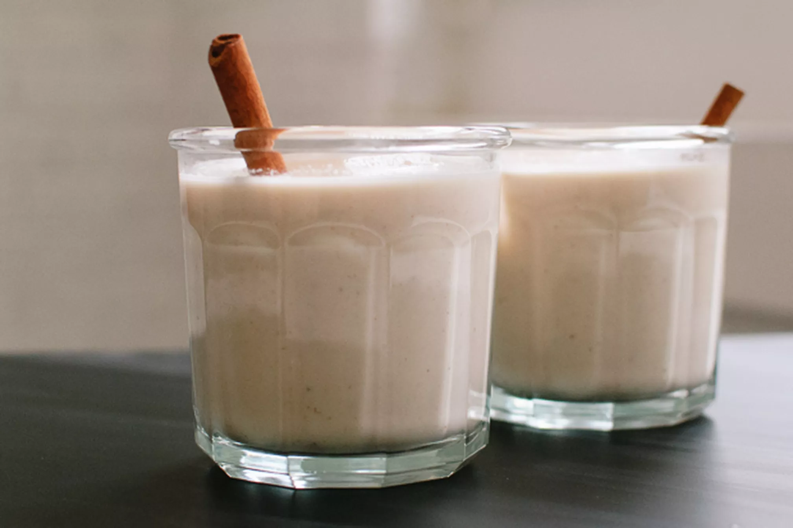

Horchata

Description
A popular Mexican rice drink that everyone will love!
Ingredients
- 1 cup white rice
- 6 cups water
- 2 cinnamon sticks
- 1 can of sweet and condensed milk
- 1 tablespoon of vanilla extract
- 1 cup of white sugar
- 2 cups of whole milk
Steps
- Place 1 cup of white rice in a bowl and add in 4 cups of water and two whole cinnamon sticks. (Optional: let soak for a day)
- Add in mixture to a blender. Make sure to add in all rice
- Also add I can of sweet and condensed milk to blender
- Add in 1 TB of vanilla extract, 1 cup of sugar, and 2 cups of milk to blender as well
- Blend the mixture until rice if fully blended
- Run blended mixture through a mesh strainer to get rid off all the extra bits
- Add in an additional 2 cups of water or until desired taste